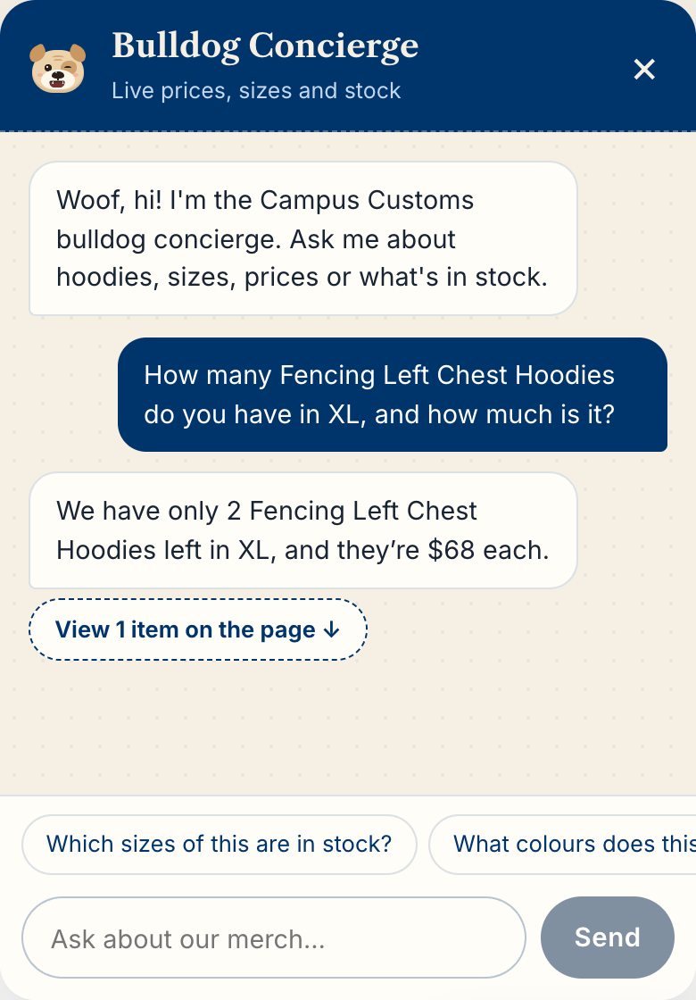
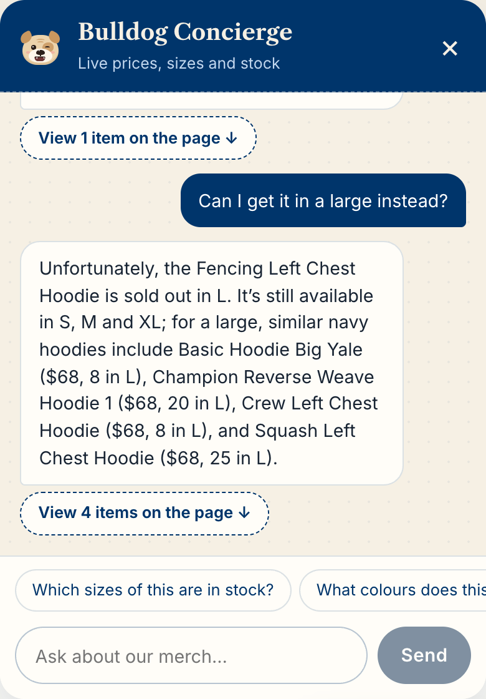
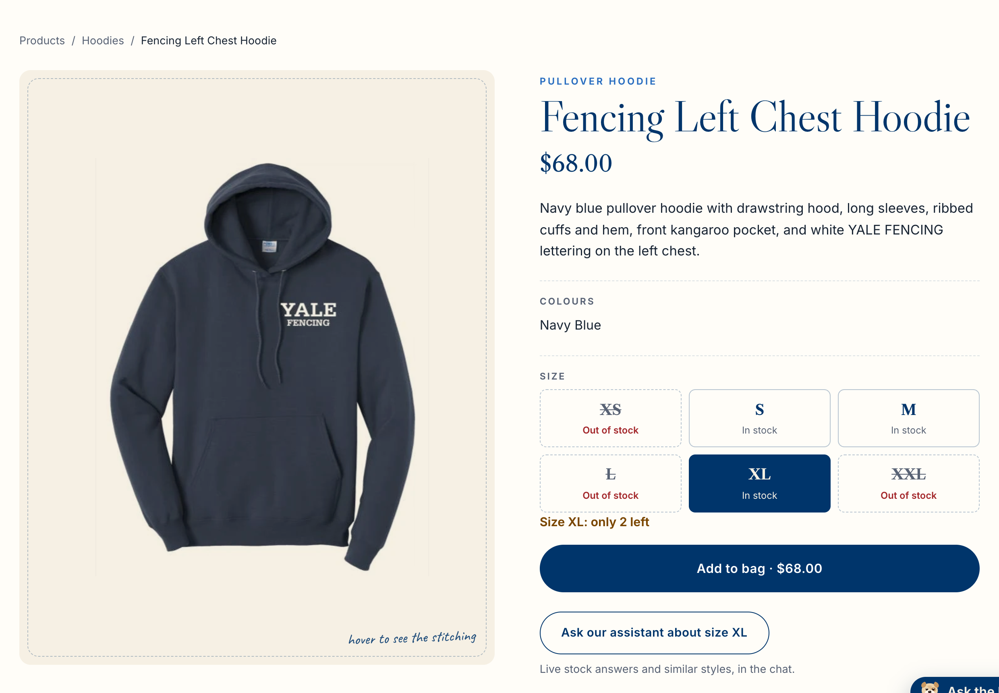
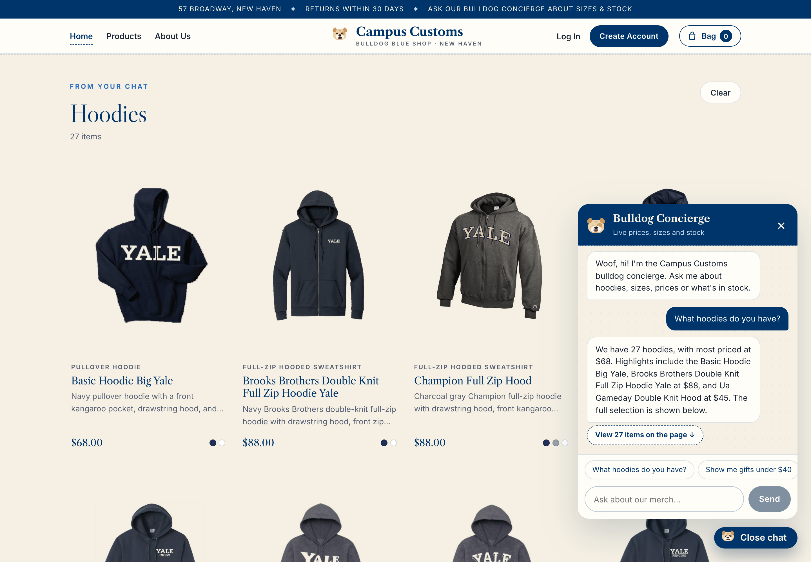
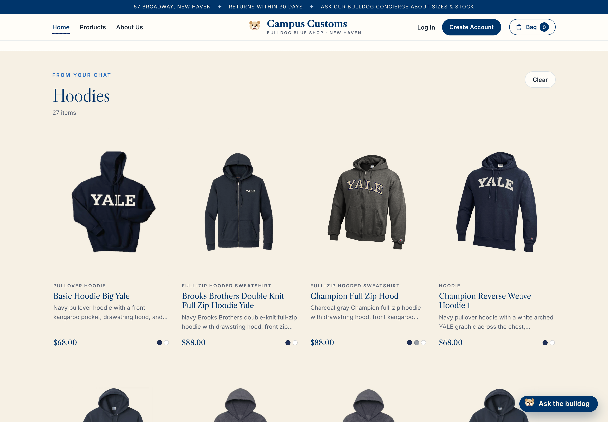
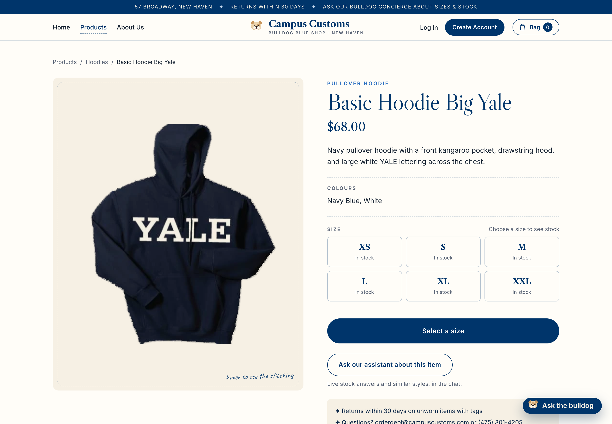
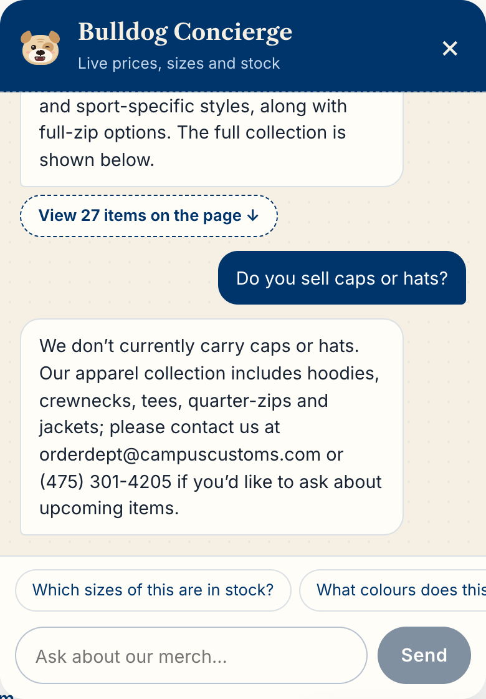
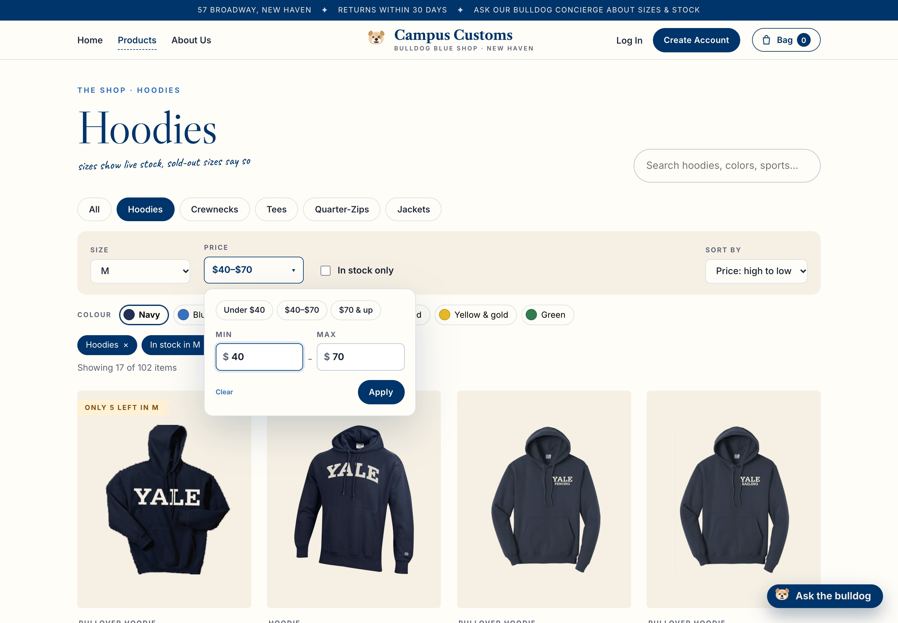
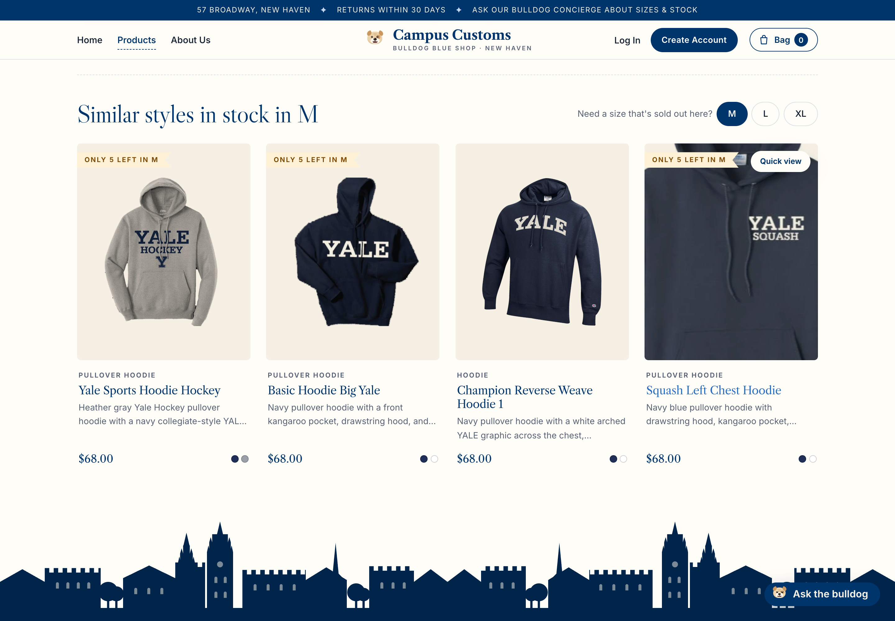
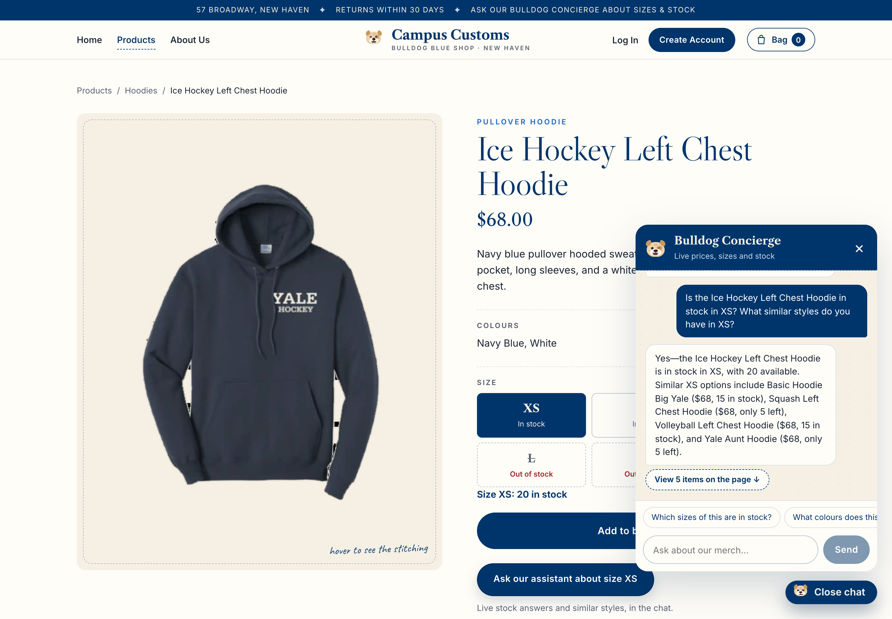

Check 1: Chat checks the inventory level of an item
On the Fencing Left Chest Hoodie page, a guest asked the chat about stock in XL, then in L. The agent looked these up with its check_stock tool, which reads the database.
Database values (ground truth)
| Product | Price | XS | S | M | L | XL | XXL |
|---|---|---|---|---|---|---|---|
| Fencing Left Chest Hoodie | $68.00 | 0 | 12 | 15 | 0 | 2 | 0 |
1a. "How many in XL, and how much is it?"

1b. "Can I get it in a large instead?"

1c. The same item's product page, with XL selected

Check 2: Dynamic search-result cards after a category question
On the home page, a guest asked "What hoodies do you have?". The agent returned the matching product ids as structured output, and the website rendered them as product cards on the page.
2a. The question and the cards appearing on the page

2b. The result cards (chat closed)

2c. Clicking a chat card opens the product page

/products/basic-hoodie-big-yale, the same page as from the shop: the whole photo, price, description and every size marked in or out of stock (the exact count appears once a size is chosen).2d. A category we don't carry: "Do you sell caps or hats?"

Check 3: Usability features from Problem 9
Four improvements from output/usability.md, each exercised on the live site.
3a. Refine and sort on the Products page (frontend)

?category=hoodies&size=M&color=navy&min=40&max=70&sort=price-desc) record every filter.3b. Sold-out rescue: similar styles in a sold-out size (backend tool + page)

find_alternatives logic the agent uses.3c. Chat shortcuts: "Ask our assistant about size XS" (frontend)

3d. Honesty guard (backend): automated test and live counters
The guard checks every chat reply's prices, stock counts, item counts and product ids against what the tools returned, and sends the agent back to fix mismatches. Test run (python tests/test_honesty_guard.py in backend/, scripted model, no API cost):
PASS wrong price -> guard retry -> 'The Boola Boola T Shirt is $32.' PASS correct price -> no retry PASS never corrected -> fallback reply: "Sorry, I couldn't confirm exact prices and stock for that ju" ... PASS shopper's own figure ($60) allowed PASS '28 hoodies' with 3 cards caught; '3 hoodies' passes
Live counters from GET /api/health after this session's chats:
{"status":"ok","model":"gpt-5.6-luna",
"honesty_guard":{"replies_checked":14,"corrections_requested":4,"unverified_fallbacks":0}}
Proves: every reply in this check passed through the guard. The 4 corrections are the miscounted hoodie drafts it caught, and no reply needed the safe fallback.
max=70) filtered correctly but showed "Any price" in the dropdown. That dropdown has since been replaced by a Price dropdown where shoppers enter their own minimum and maximum and press Apply, so any range a link carries is shown, as screenshot 3a shows.